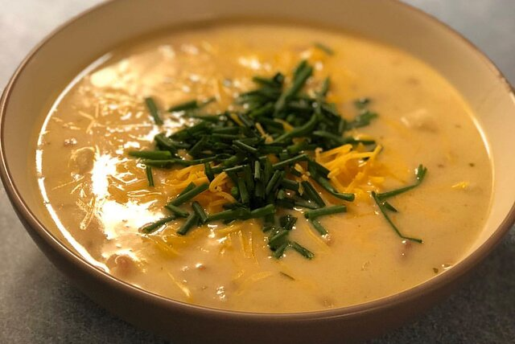

Lasagna recipe

This no-bake skillet lasagna is made right on your stovetop and is a fast and easy alternative to store-bought hamburger mixes!
Ingredients
- ½ pound ground beef
- 1 onion, chopped
- 1 garlic clove, minced
- 1/2 teaspoon salt
- 1/2 teaspoon ground black pepper
Steps
- In a large skillet, heat oil over medium-high heat. Add ground beef and cook until no longer pink, about 5 minutes. Add onion and garlic and cook until onion is tender, about 5 minutes. Add salt and pepper and cook until beef is no longer pink, about 5 minutes.
- Add lasagna noodles and cook until al dente, about 5 minutes. Drain noodles and add to skillet. Add remaining ingredients and cook until noodles are tender, about 5 minutes.
- Serve immediately.